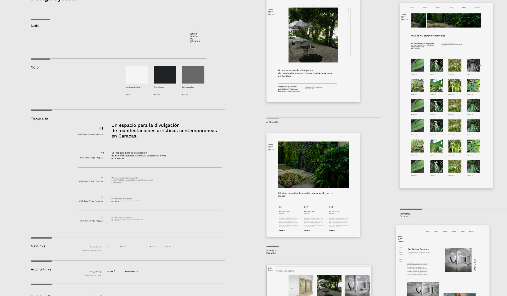

Centro de arte Los Galpones (wip)
Web design / Webflow development
Role:
Freelance Designer and Developer
Company
Centro Los Galpones
www.centrolosgalpones.webflow.io
Type
Company website
and art archive
Project overview
Figma + webflow
CMS based website
"75 years of art to be explored on one screen"
Two heads think better than one
This project was made in collaboration with with Raquel Paolini Madrid.
A brilliant designer and illustrator who helped with UI tasks and produced beautiful imagery for the site.
A very necessary upgrade
One of the most famous art galleries in Caracas was expanding towards the american market, this meant they had to
assemble a network of important agents in the art field and quickly showcase the essence of the "los Galpones" art centre.
All they had was an old, non responsive php based website that just didn't do the trick. I worked with them to develop a design
that let people move seamlessly through the art centre's past and present.
UX writing vs artistic writing
One of the main client-requirements was to make the browsing experience a bit less streamlined and a bit more
intriguing. This demand opened up the opportunity for potential failure since many of the page segments could be
percieved as misleading.
We worked out, and are currently testing copywriting where verbs guide the user through the navigation.
However, sections that have to be easly searched and found, continue to have UX terminology. The interesting part is choosing
where to make compromises.
A small brand refresh
Design wise, the client had an existing set of brand guidelines, it was however, not adapting
to the more recent formats of the digital space. A small design system was implemented where everything, from color to animated elements
related perfectly to the existing nature of the art center.
One of the most important things is that it's one of Caracas's greatest
reservoir of plant species. So far, users have told me that the website really feels like it belongs to the "Los Galpones" Ecosystem.

The Fun part
The client is one of my architecture professors from university.
We decided to test Webflow for the first time with this project, since it's nature demanded a CMS feature for a fast execution.
We were absolutely surprised that a person alone (me) was able to design a +100 screen website in such little time.
We did it like architects, with a set of repeating modular design components that are diverse enough to allow for creative and varied compositions.